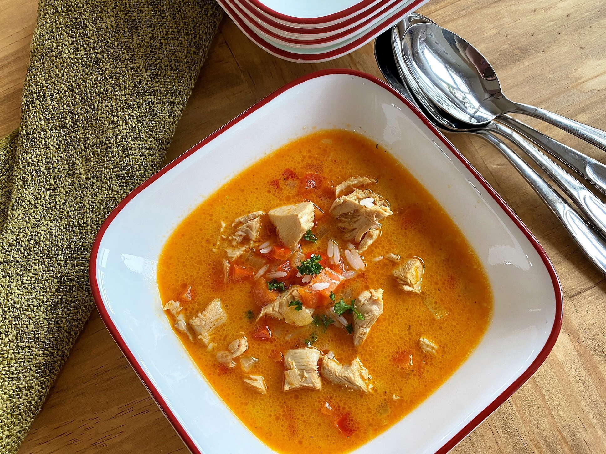

Coconut Curry Soup with Chicken

Description
The best curry soup with chicken and coconut! Coconut curry soup are very nutritious and healthy.
This delicious main dish can be ready in just about 1 hour 25 minutes.
To complete the menu, serve with Kesra or angera.
Ingredients
- 4 cups water
- 2 large bone-in chicken breasts, skin removed
- 1 tablespoon coconut oil
- 3 carrots, peeled and diced
- 1 onion, diced
- 1 red bell pepper, diced
- 1 cup cooked rice
- 3 tablespoons brown sugar
- 1 tablespoon curry paste
- 1 (14 ounce) can coconut milk
- 2 cubes chicken bouillon
Steps
- Combine water and chicken in a large pot over medium-high heat.
Bring to a boil and cook until chicken is no longer pink at the bone and the juices run clear, about 30 minutes.
Remove chicken from the pot, cut off meat from bones, and
dice.
Strain cooking broth through a sieve and set aside.
-
Heat coconut oil in a separate pot over medium heat.
Add carrots, onion, and bell pepper; cook until softened, 5 to 7 minutes.
Stir in cooked rice, brown sugar, curry paste, and diced chicken.
Cook and stir until curry paste
is completely incorporated, about 3 minutes.
- Pour in reserved chicken broth, coconut milk, and bouillon cubes.
Increase heat to medium-high and bring to a boil.
Reduce heat and simmer until flavors are well combined, 15 to 20 minutes.
Nutrition Facts
Per Serving: 467 calories; protein 30.5g; carbohydrates 22.5g; fat 28.7g;
cholesterol 84.9mg; sodium 553.3mg.